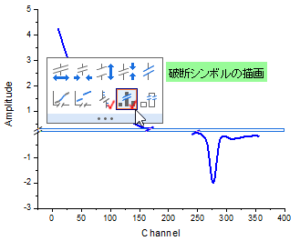
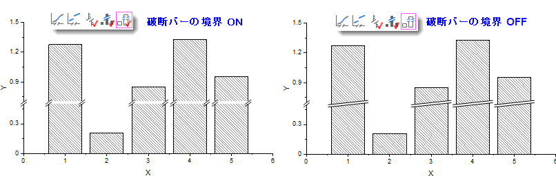

FAQ-1061 プロットの破断部分に破断のマークを追加するにはどうすればよいですか？
Add-Axis-Break-on-Plot
最終更新日：2020/8/3
軸破断を追加したとき、デフォルトでは、プロット上の破断部分には間隔が設けられます。
プロット上にも破断のマークを追加するには
- 軸破断を追加後、破断シンボル上でクリックして、ミニツールバーの破断シンボルの描画ボタンをクリックします。
- 
Note: 破断シンボルは軸破断の形状に従い、色はプロットの色に従います。
特に縦棒/横棒グラフの場合
- 破断バーの境界ボタン
 （破断シンボルの描画ボタンの隣）をクリックして、プロットの境界の両端で破断のマークを表示できます。それ以外の場合、破断のマークは棒全体に表示されます。
（破断シンボルの描画ボタンの隣）をクリックして、プロットの境界の両端で破断のマークを表示できます。それ以外の場合、破断のマークは棒全体に表示されます。
- 
キーワード:軸破断,
ギャップ, 破断のマーク, 破断部分, 破断領域